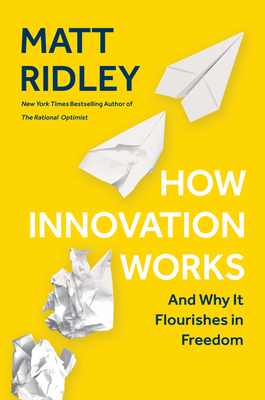

How Innovation Works and Why It Flourishes in Freedom
Matt Ridley
My rating 4/5
Matt Ridley’s How Innovation Works is best consumed as an audio book. The book traces the history of innovation in several industries including energy, public health, transport, food, communication and computers. The later half focuses on deriving rules about innovation given the history.
Among the stories of innovation, a case that stuck with me was the state of nuclear energy, which is a promising renewable source that is carbon free, but since iterating to improve the technology is rendered costly due to safety and environmental laws and guarantees, we are stuck with technology that is decades old. A second story is how innoculation using cow pox strains has been done for half a century before a proper vaccine was developed, which is yet another example of how the use of a technology precedes its understanding, much like machine learning today.
Given the history, innovation seems to be a gradual, serendipitous, bottom-up phenomenon that thrives amidst fragmented governance. Consequently, bigger companies and monopolistic systems are bad at innovation. However, I feel that a retrospective aggregation of innovation perfers only breakthroughs and suffers from survivor bias. The book also briefly touches on innovation stagnation and what factors stifle innovation (laws, monopoly, government, lack of capital).
The book however, can get a little rambling at places because several details of inventions could be spurious for people who are not students of history.
I’d recommend this book for entrepreneurs and researchers.